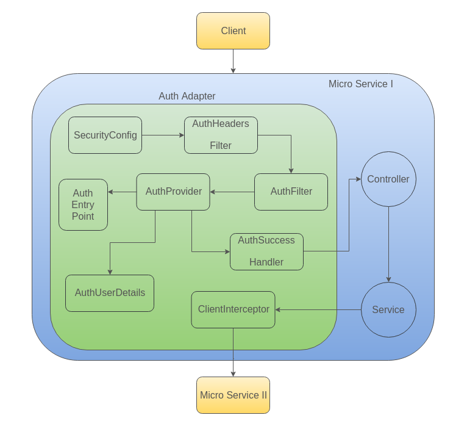

Implementations¶
Auth adapter is a package that needs to be injected into Mosip's applications exposing REST API's inorder to secure them.

Auth Adapter includes following class definitions:
SecurityConfig¶
Holds the main configuration for authentication and authorization using spring security.
Inclusions:
AuthenticationManager bean configuration:
This is assigned an AuthProvider that we implemented.
RETURNS an instance of the ProviderManager.
AuthFilter bean configuration:
This extends AbstractAuthenticationProcessingFilter.
Instance of the AuthFilter is created.
This filter comes in line after the AuthHeadersFilter.
Binds the AuthenticationManager instance created with the filter.
Binds the AuthSuccessHandler created with the filter.
RETURNS an instance of the AuthFilter.
RestTemplate bean configuration:
Binds the ClientInterceptor instance with the RestTemplate instance created.
RETURNS an instance of the RestTemplate.
Secures endpoints using antMatchers and adds filters in a sequence for execution.
AuthFilter¶
AuthFilter is bound with AuthenticationManager to attempt authentication.
Attempt Authentication tasks:
Receives "Authorization" Header from request headers.
Use the assigned Authentication manager to authenticate with the token.
AuthHeadersFilter¶
This filter is going to act as a CORS filter. It is assigned before AuthFilter in the filter chain.
Tasks:
Sets headers to allow cross origin requests.
Sets header to allow and expose "Authorization" header.
AuthProvider¶
Contacts auth server to verify token validity.
Tasks:
Contacts auth server to verify token validity.
Stores the response body in an instance of MosipUser.
Updates token into SecurityContext.
Bind MosipUser instance details with the AuthUserDetails that extends Spring Security's UserDetails.
AuthSuccessHandler¶
Handles successful authentication. If any action needs to be done after successful authentication, this is where you have to do it.
AuthEntryPoint¶
Captures and sends "UnAuthorized" error.
AuthToken¶
Used in AuthProvider for token details.
This extends UsernamePasswordAuthenticationToken class.
AuthUserDetails¶
Used by spring security to store user details like roles and use this across the application for Authorization purpose.
ClientInterceptor¶
It is used to intercept any http calls made using rest template from this application.
Config:
This is added to the list of interceptors in the RestTemplate bean created in the SecurityConfig.
Tasks:
Intercept all the requests from the application and do the below tasks.
Intercept a request to add auth token to the "Authorization" header.
Intercept a response to modify the stored token with the "Authorization" header of the response.
MosipUser¶
Mosip user is the standard spec that will be tuned based on the details stored in ldap for a user.
AuthControllerAdvice¶
Adds latest token to the response headers before it is committed.